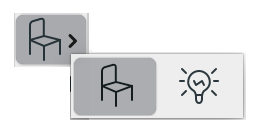
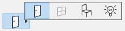

Push Menu Control
The push menu control looks like a push-style check box or radio button with a small arrow in its bottom-right corner. In addition to the standard push-style controls' behavior, a DG push menu control can show a pop-up palette with icon buttons.
The user can pop-up this palette by pressing the (left) mouse button on the push menu control for a short time. The currently selected item appears pushed on the pop-up menu. The user can then select a menu item with keyboard or mouse click. The selected item becomes the active (visible) item of the push menu control and the push menu control itself becomes checked.
-
 
Item types
- DG_ITM_CHECKBOX
DG_ITM_RADIOBUTTON
Subtype
- DG_BT_PUSHMENUICON
GRC Specification
IconMenuCheck x y dx dy [iconID1] ... [iconIDi] ... [iconIDn]
IconMenuRadio x y dx dy groupID [iconID1] ... [iconIDi] ... [iconIDn]
where x and y are the pixel coordinates of the upper left corner of the push menu control, dx and dy are the width and height of the control in pixels. groupID defines the 1-based index of a group of radio buttons to which the control belongs. If the optional iconIDi (1 <= i <= n) parameters are present, they initialize n pieces of push menu items by giving the icon resource IDs of the icon buttons in the pop-up palette. These icon IDs can be wrapped into more rows.
Messages
-
Message Meaning DG_MSG_CHANGE The checked state or the selected menu item of the push menu control is changed. To retrieve the previous state or the previously selected menu item of the push menu control from the message data, use DGGetPrevItemVal and DGGetPrevMenuItem macros, respectively. DG_MSG_DOUBLECLICK The push menu control is double clicked. The message data parameter is always zero.
Modification Flag
The DGPushMenuCheck function sets the push menu control's modification flag except if it is called when handling the DG_MSG_INIT message in the dialog callback function. The flag can also be set by user actions that generate DG_MSG_CHANGE messages. Note that in the case of radio button-type push menu controls, the modification flag of all the radio buttons in the same group are also set. Use DGModified or DGResetModified to retrieve or reset (clear) the state of the modification flag.
Remarks
Call DGPushMenuSetItemCount to increase or decrease the number of menu items in a push menu control. The number of menu items currently in a push menu control can be retrieved by DGPushMenuGetItemCount. Before DG version 1.1.1 these functions are not available, use DGSetItemMaxLong and DGGetItemMaxLong instead.
There are two ways to set an icon of a push menu control item. One possibility is to specify the icon with its icon handle by DGPushMenuSetItemIcon, the other is to set it with its resource ID by DGPushMenuSetItemIconId or by DGPushMenuSetItemIconResource. The icon handle can be retrieved by DGPushMenuGetItemIcon, the icon ID and the resource module ID of the icon can be retrieved by DGPushMenuGetItemIconId and DGPushMenuGetItemIconResource, respectively.
The menu items on the pop-up palette can be disabled by DGPushMenuDisableItem. Disabled menu items appear grayed on the palette and they are not selectable. The DGPushMenuDisableItem function should not be used on the currently selected push menu item. This means there must be at least one enabled menu item in the push menu. If all the menu items are to be disabled, use DGDisableItem to disable the push menu control itself. Previously disabled menu items can be re-enabled by DGPushMenuEnableItem. To test whether a menu item is enabled or not call DGPushMenuIsItemEnabled.
A push menu control has one and only one selected (active) menu item. The icon of the currently selected menu item is shown on the button face of the control. When the push menu pop-up palette is on, the user can change the current selection by mouse clicks or by keypresses through the usual ways. The selection can be changed not only by user actions but from program code, too, by calling the DGPushMenuSelectItem function. The currently selected menu item can be retrieved by DGPushMenuGetSelected.
If the item type of the push menu control is DG_ITM_RADIOBUTTON, it can be grouped with other radio buttons of the same dialog or tab page. The grouping information can be specified in the GRC only. When switching on a radio button of a group (either by user action or from program code), DG automatically switches off the other radio buttons of the group. If a radio button in a group is switched on by user action, the dialog callback function is called with DG_MSG_CHANGE only for the radio button pressed. However, the modification flag of all the radio buttons in the group are set (DGModified will return 1). Use DGGetCheckedRadio to retrieve the 1-based index of the checked radio button in a group.
To switch on (check) or switch off (uncheck) a push menu control call DGPushMenuCheck. Note that radio button-type push menu controls can not be unchecked by this function call. Use DGPushMenuIsChecked to retrieve the checked state of a push menu control. Before DG version 1.1.1 DGSetItemValLong and DGGetItemValLong can be used instead of DGPushMenuCheck and DGPushMenuIsChecked.
Requirements
- Version: DG 2.0.0 or later
- Header: DG.h
See Also
Dialog item types, Check Box, Radio Button
Push menu specific functions, DGGetItemMaxLong, DGGetItemValLong, DGModified, DGResetModified, DGSetItemMaxLong, DGSetItemValLong, Callback functions
DG_MSG_CHANGE, DG_MSG_DOUBLECLICK, DG_MSG_INIT